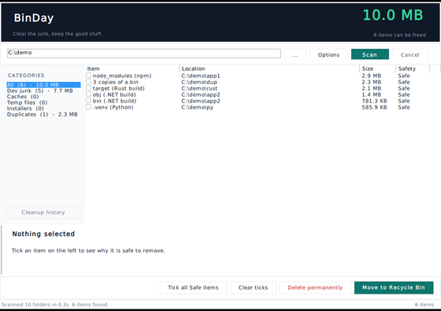

build output. your tooling regenerates it. safe to remove — it comes back the next time you build.

binday
a little cleaner that lives on your windows pc. finds it
build junk, caches, temp files, old installers, duplicates, big media and leftover app packages. every item comes with its size and a plain sentence on what happens if you remove it.
build output & package caches
node_modules, bin & obj, target, .venv, __pycache__, plus the npm, pip, NuGet, Gradle and Maven caches. only offered when a project file sits next to it, so a folder that merely looks disposable is left alone.
old installers & duplicate downloads
big .msi, .iso and .exe files over 30 days old, redundant copies of the same installer, and .apk & .xapk files lying around after you installed the app somewhere else. always graded review — they only ever go to the recycle bin.
big media — but only yours
videos, photos and audio over the size floor you choose, with real explorer-style thumbnails. these are your own files, so binday never calls them junk. they are graded review and can only go to the recycle bin.
and nothing else
no registry tweaks, no background services, no telemetry, no account. the only thing that touches the network is “check for updates”, and only when you press it. and if it can’t prove an item is disposable, it stays out of the list entirely.
the product is not the scanning. it is the trust.
every item carries a grade, and the grade decides what the app is allowed to do.
regenerated automatically by your tools. recycle bin or permanent delete, your call.
regenerated, but the next build needs the network. recycle bin only.
could be something you want to keep. recycle bin only.
- nothing is deleted until you tick it and confirm.
- permanent delete is refused for anything not graded safe — by the engine, not just the button.
Windows,Program Files,ProgramData,AppDataand$Recycle.Binare never walked and never deleted.- symbolic links and junctions are never followed.
- every cleanup is written to a local history you can read back in the app.
four steps, and you are still in the driver’s seat for all of them.
pick a folder
your user profile is pre-filled. point it at a project folder instead if that is where the junk is.
browse the collections
dev junk, caches, videos, photos, app packages — each with a live count and size. sort by size, name or date.
read what would happen
select an item and the panel tells you what it is, exactly what would be removed, and how to get it back if you are wrong.
tick and confirm
recycle it, or delete the safe ones for good. a final review screen lists everything first. either way, you decide.
the short version of what to know before you run it.
does it just delete stuff?
no. it scans, it explains, and it asks. nothing is removed until you tick the item and confirm on a final review screen.
is anything running in the background?
no. no services, no shell extensions, no telemetry. the only network call in the app is “check for updates” and it only happens when you press it.
what does “not code-signed” mean?
windows may show “windows protected your pc” when you first run it. choose more info → run anyway. the app itself never needs admin rights.
can i get things back if i made a mistake?
yes. the safe and check grades go to the recycle bin by default, so everything comes back until you empty the bin. permanent delete is only ever available for items the engine proves are regeneratable.
what about my own files?
big media and old installers are graded review and can only go to the recycle bin. binday never calls your own files junk.
one small file, and you are running. no install, no account, no admin.
prefer an installer? get the .zip — it adds a desktop icon and an uninstaller.
open source · plain C#, no dependencies · build it yourself